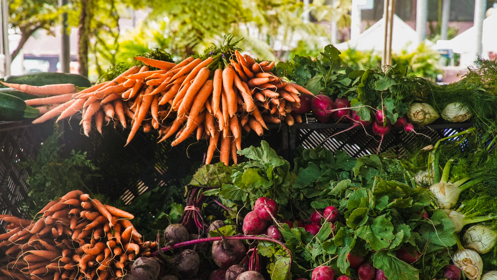

O Movimento 'Alegra Campos' pretende apoiar os pequenos agricultores e produtores da Madeira, ajudando-os a escoar os seus produtos de uma forma prática, divertida, e sem intermediários. Visite explorações espalhadas um pouco por toda a ilha, conheça a realidade rural, e aproveite para adquirir produtos frescos e directamente da origem.
É agricultor ou produtor e pretende juntar-se s este movimento? Registe-se abaixo. Teremos todo o gosto em conhecer a sua exploração e adicioná-la à nossa lista. Lembre-se que a mesma deve estar aberta durante as 16 e as 17h (pelo menos durante 1 hora por semana), e ter condições de higiene e acessibilidade que garantam a segurança dos seus visitantes.
Se é apenas um consumidor, e adepto do comércio justo, consulte a nossa lista ou o nosso mapa, e aproveite desde já para descobrir explorações à sua volta.
Podem fechar sem aviso prévio.
Segunda 16:00 - 17.00
Terça 16:00 - 17:00
Quarta 16:00 - 17:00
Quinta 10:00 - 17:00
Sexta 16:00 - 17:00
Vemo-nos no campo :) Se quer saber mais, ou apoiar de alguma forma esta causa, ligue 05050515-122330
PS Queremos ajudar os pequenos agricultores e produtores, através de um comunicação eficaz e do uso de tecnologia que lhes permita chegar aos consumidores de uma forma mais eficiente.
Registe a sua exploração introduzindo alguns detalhes, que nós tratamos do resto: